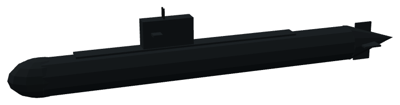
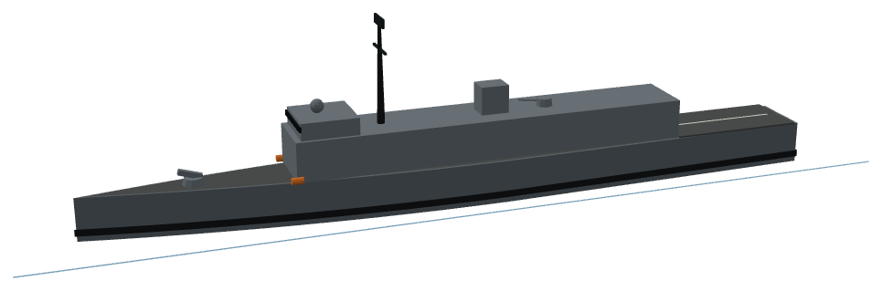
Tiefenkontakt ist eine U-Boot-Jagd im Stil des Kalten Kriegs für 2 bis 12 Spieler im Browser. Zwei Teams kämpfen um einen Konvoi: Das Ostpakt-Wolfsrudel will Tonnage versenken, der Westbund-Geleitschutz will den Konvoi ins Ziel bringen. Alle Nationen, Schiffsklassen und Namen sind erfunden.
Jeder Spieler führt ein Schiff, allein oder als Besatzung mit Freunden. Fehlende Plätze übernimmt die KI, man kann also auch allein spielen. Die Simulation ist bewusst nüchtern: Man sieht den Gegner fast nie. Man hört ihn, peilt ihn, schätzt seine Bahn und schießt auf eine Lösung.
Gemischte Teams: Jede Seite darf einen gemischten Platz besetzen. Der Westbund schickt ein Jagd-U-Boot (S-14) vor den Konvoi, der Ostpakt ein Wachschiff (Projekt 11) mit Seezielflugkörpern mit dem Rudel. Um eigene U-Boote liegt ein mitwanderndes Sperrgebiet von 4 km, in das die eigene Seite keine U-Jagd-Waffe wirft; außerhalb ist jedes unbekannte U-Boot ein Ziel. Freund oder Feind zu erkennen ist damit Pflicht.
Frachter, die das Wachschiff mit Seezielflugkörpern versenkt, zählen nur zur Hälfte: Der Konvoi ist Sache der U-Boote. Die Anzeige zeigt dann „ZÄHLT … %“.
Die Zeit läuft dreifach gerafft: Eine Stunde Simulationszeit dauert 20 Minuten. Alle Uhren im Spiel zeigen Simulationszeit. Eine Partie dauert je nach Mission 30 bis 60 Minuten.
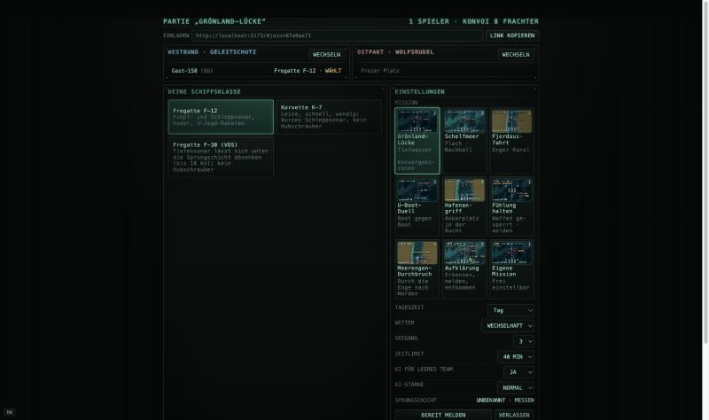
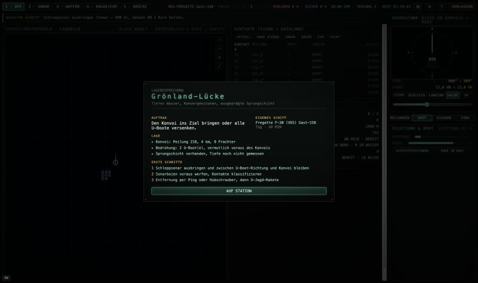
Im Reiter Funk schaltet „Sprechfunk an“ das Mikrofon frei (der Browser fragt einmal). Gesprochen wird nur, solange Sprechen gedrückt ist – mit der Maus, dem Finger oder der Taste V. Die Liste zeigt jeden Teamkameraden im Sprechfunk mit Verbindungsgüte; ein grüner Punkt heißt: er spricht gerade.
| Fregatten und Korvetten | Immer auf Sendung. Reichweite bis zum Horizont der Antennen (Fregatte zu Fregatte gut 40 km); zum Rand hin rauscht es. |
| Verbindungsgüte | Zum Rand der Reichweite rauscht es stärker, die Stimme wird leiser und dünner und schwankt; unter etwa 35 % Güte reißt sie immer wieder kurz ab. Regen kostet 15 % Reichweite, Seegang ab 5 je Stufe 5 %, und ab Seegang 4 überspülen die Wellen den Funkmast eines U-Boots (je Stufe 8 %). |
| U-Boote | Nur aufgetaucht oder auf Sehrohrtiefe mit ausgefahrenem Funkmast. Getaucht kein Sprechfunk (Längstwelle und Schleppantenne tragen keine Sprache). |
| Gleiches Schiff | Bordsprechanlage: immer, auch getaucht, ohne Rauschen und ohne Abstrahlung. |
| Risiko | Jede Sendung über Funk gibt dem Gegner eine Funkpeilung, bei langem Sprechen alle paar Sekunden eine neue. Kurz fassen! |
Für den Einstieg führt „Erste Feindfahrt“ (Lobby, Ausbildung) durch einen ganzen Angriff auf einen einzelnen Frachter: Tiefe, Schleichfahrt, Horchen, Schenkel für die TMA, Sehrohr, Schuss, Drahtlenkung und Ablaufen – jeder Schritt mit Haken, „Weiter“ überspringt.
Das Gegenstück für die Fregatte ist „Erste Geleitfahrt“: drei Frachter folgen der Fregatte, voraus läuft ein einzelnes Diesel-U-Boot tief und auf festem Kurs an. Die Lektion führt durch Fahrt verringern, Schleppsonar auf 900 m ausbringen und einschwingen lassen, Sonarboje vor den Konvoi werfen, den leisen Kontakt finden und als U-Boot klassifizieren, den Konvoi umleiten, mit kurzem LFM-Ping die Entfernung holen und die U-Jagd-Rakete schießen. Geschafft ist sie, wenn das U-Boot getroffen ist.
Die geführten Lektionen bringen jede Station Schritt für Schritt bei: Horchen, Peilen, TMA, Torpedoangriff, Schleppsonar, Hubschrauber und Ausweichen. Ein gelber Hinweis zeigt immer den nächsten sinnvollen Schritt. Die Stufe „Einsteiger“ beschriftet Linien und bietet Auto-Marken und Auto-TMA, „Profi“ verzichtet darauf.
| Bereich | Inhalt |
|---|---|
| Obere Leiste | Stationen (Tasten 1–5), Schiff, Tonnage-Balken (rot versenkt, blau entkommen, Strich bei 50 %), Uhrzeit, Seegang, Restzeit, Ton, Einstellungen, Hilfe. |
| Mitte | Die gewählte Station: Sonar, Sehrohr, Feuerleitung, Tauchstand bzw. Operationszentrale, Sonar, Waffen, Radar, Brücke. |
| Rechts oben | Ruderstand: Kompass (Klick setzt den Kurs), Fahrstufen, Tiefe, Sehrohr bzw. Mast. Immer sichtbar. |
| Rechts unten | Reiter Meldungen · Boot · Schaden · Funk. Ein roter Punkt zeigt Neues in einem anderen Reiter. |
| Karte | Ziehen verschiebt, Rad zoomt, Linksklick wählt einen Kontakt. Rechtsklick öffnet Aktionen: Kurs hierher, Torpedo hierher, Rakete, Boje, Hubschrauber, TMA. |
| Kompass | Klicken oder ziehen setzt den Kurs. Gelb = befohlen, blau = aktuell. |
| Wasserfall, Radar | Klick auf eine Spur oder ein Echo wählt den Kontakt. |
| Listen | Spaltenköpfe sortieren, Filterchips grenzen ein (aktuell, ohne eigene, Sonar, ESM, Optik). |
Unter Wasser ist Schall das einzige Sinnesorgan auf Entfernung. Wer das Meer versteht, gewinnt.
Ein Kontakt entsteht, wenn der Signalüberschuss (SE) über null liegt. Er ergibt sich aus Quellpegel minus Ausbreitungsverlust minus Störpegel (abzüglich der Bündelung der Antenne) minus Erkennungsschwelle. Jeder Faktor ist im Spiel nachgebildet.
| Faktor | Was ihn erhöht (schlecht für den Gehörten) | Was ihn senkt |
|---|---|---|
| Quellpegel SL | Fahrt (stark), Kavitation, Schnorcheln, Notanblasen, Rohrfluten, Gefechtslärm | Schleichfahrt, „Ruhe im Boot“ (−3 dB), Tiefe (Kavitation setzt später ein) |
| Ausbreitung TL | Sprungschicht zwischen den Partnern, Flachwasser mit Bodenverlust, Entfernung | Oberflächenkanal, Konvergenzzone, gleiche Seite der Schicht |
| Störpegel NL | Seegang, Regen, Verkehr, eigene Fahrt, Lärm anderer Schiffe in derselben Peilung | Ruhige See, langsame eigene Fahrt |
Unter der warmen Deckschicht fällt die Temperatur plötzlich ab. Diese Sprungschicht knickt Schallstrahlen ab: Wer auf der anderen Seite ist, wird 10–15 dB leiser gehört. Über der Schicht bildet sich ein Oberflächenkanal, der Schall weit trägt. Die Schichttiefe ist unbekannt, bis sie gemessen ist: Die Fregatte wirft eine BT-Sonde, das U-Boot bemerkt sie beim Durchtauchen. Auf kurze Entfernung (unter 2 km) wirkt die Schicht nur teilweise.
In tiefem Wasser biegen sich Strahlen in großer Tiefe wieder nach oben und kommen in etwa 55 km Entfernung an die Oberfläche zurück. Dort hört man laute Schiffe plötzlich wieder, dazwischen ist Stille.
Im Horchraum des Boots und am Sonar der Fregatte zeigt die aufklappbare Reichweitenvorhersage einen Schnitt durch die See: nach rechts die Entfernung, nach unten die Tiefe. Grün ist, wo man ein typisches Ziel hört (Boot: Geleitfahrzeug mit 15 kn, blass ein Frachter mit 9 kn; Fregatte: Diesel-U-Boot mit 5 kn auf Batterie), rot schraffiert, wo der Gegner einen selbst hört. Beim Boot ist die Tiefe die eigene: Man sieht, wie es unter der Schicht stiller wird. Bei der Fregatte ist es die Tiefe des Boots. Die Vorhersage rechnet mit eigener Fahrt, Seegang, Wassertiefe und der gemessenen Schicht. Ohne Messung steht dort SCHICHT UNBEKANNT · NUR GROBE SCHÄTZUNG. Schwund, Maskierung und Gelände rechnet sie nicht mit.
Im Schelfmeer und im Fjord ist das Wasser 100–300 m tief. Der Boden schluckt Schall mit jeder Reflexion, die Schicht ist schwach und Nachhall (Echos von Boden und Oberfläche) überdeckt das Aktivsonar. Ein CW-Puls findet dort langsame Ziele kaum, ein LFM-Puls mit Pulskompression schon. Ein schnelles Ziel hebt sich durch seinen Doppler auch beim CW-Puls vom Nachhall ab.
Ein lautes Schiff überdeckt leisere Kontakte in fast derselben Peilung (Rumpfsonar etwa ± 8°, Schleppsonar ± 5°). U-Boote nutzen das: Wer sich nah unter einen Frachter setzt, verschwindet in dessen Lärm.
Hinter jedem Schiff liegt ein toter Winkel von etwa ± 30°, in dem das Rumpfsonar die eigene Schraube hört. Zusätzlich sieht kein Rumpfsonar steil nach unten: Ein Ziel mehr als 30° unter dem Schiff, also tief und nah, ist unsichtbar. Das Schleppsonar hört achtern, kann aber links und rechts nicht unterscheiden.
Schiffe sind von achtern am lautesten (Schraube) und von vorn am leisesten. Querab werfen sie das stärkste Aktiv-Echo zurück, von vorn das schwächste. Darum zeigt ein U-Boot einem pingenden Gegner das Heck und meidet die Breitseite.
Jedes Gebiet ist ein echtes Seegebiet mit seinen Strömungen, seiner Schichtung je Jahreszeit und dem Sonnenstand seiner Breite. Die Jahreszeit wählt man in der Lobby (oder Zufall). Strom und Kenterzeit stehen in der Zentrale und in der OPZ.
Genordet: Alle Karten, Radarschirme und Kompasse zeigen Nord oben wie eine Weltkarte. Kurse und Peilungen sind rechtweisend (000 = Nord, 090 = Ost); in der Straße von Gibraltar läuft die Route also nach Osten, in der Grönland-Lücke nach Nordwesten. Relative Angaben (Backbord/Steuerbord, Lagewinkel) bleiben auf den eigenen Bug bezogen.
| Gebiet | Strömung | Schicht Winter | Schicht Sommer | Licht | Verkehrswege |
|---|---|---|---|---|---|
| Färöer-Bank offen · 60,7° N | Oben der Nordatlantikstrom nach Nordost, in der Tiefe der kalte Overflow nach Südwest. | ~210 m (8 dB) | ~53 m (12 dB) | Jun: Helle Nächte: nachts nur Dämmerung | — |
| Barentssee bei der Bäreninsel Schelf · 74,7° N | Nordkapstrom, drehender Gezeitenstrom auf dem Schelf. | keine | ~33 m (6 dB) | Jan: Polarnacht: auch mittags dunkel Jun: Mitternachtssonne: die Sonne geht nicht unter | — |
| Vestfjord (Lofoten) Fjord · 68,3° N | Norwegischer Küstenstrom, kräftige Gezeiten zum Mahlstrom hin. | ~90 m (9 dB) | ~17 m (7 dB) | Jun: Mitternachtssonne: die Sonne geht nicht unter | Fahrwasser nach Narvik, Fähre Bodø–Moskenes |
| Kolabucht (Murmansk) Hafen · 69,3° N | Gezeitenstrom in der Bucht, ein- und auslaufend. | keine | ~33 m (6 dB) | Jan: Polarnacht: mittags nur Dämmerung Jun: Mitternachtssonne: die Sonne geht nicht unter | Fahrwasser der Kolabucht |
| Straße von Gibraltar Meerenge · 35,9° N | Oben strömt Atlantikwasser ostwärts ins Mittelmeer, unter 150 m läuft Mittelmeerwasser westwärts hinaus; dazu der Gezeitenstrom. Wer tief genug geht, treibt mit gestoppter Maschine lautlos hinaus. | ~200 m (6 dB) | ~38 m (13 dB) | — | Verkehrstrennung westwärts, Verkehrstrennung ostwärts, Fähre Tarifa–Tanger |
| Lofotenbecken offen · 69,6° N | Norwegischer Strom nach Nordnordost. | ~210 m (8 dB) | ~53 m (12 dB) | Jan: Polarnacht: mittags nur Dämmerung Jun: Mitternachtssonne: die Sonne geht nicht unter | — |
| Dänemarkstraße offen · 66,0° N | Ostgrönlandstrom und Overflow, beide nach Südwest. | keine | ~33 m (6 dB) | Jun: Helle Nächte: nachts nur Dämmerung | — |
| Färöer-Shetland-Kanal offen · 61,2° N | Nordatlantikstrom oben nach Nordost, kaltes Tiefenwasser nach Südwest. | ~210 m (8 dB) | ~53 m (12 dB) | Jun: Helle Nächte: nachts nur Dämmerung | Route Färöer–Shetland |
| Rockall-Trog offen · 56,8° N | Schwacher Nordatlantikstrom nach Nordnordost. | ~210 m (8 dB) | ~53 m (12 dB) | — | — |
| Golf von Biskaya offen · 45,0° N | Schwacher Strom, Gezeiten am Schelfrand. | ~210 m (8 dB) | ~53 m (12 dB) | — | — |
| Framstraße offen · 78,8° N | Ostgrönlandstrom mit dem Eis nach Süden. | keine | ~33 m (6 dB) | Jan: Polarnacht: auch mittags dunkel Jun: Mitternachtssonne: die Sonne geht nicht unter | — |
| Island–Färöer-Rücken offen · 63,4° N | Nordatlantikstrom über dem Rücken, Overflow in der Tiefe. | ~210 m (8 dB) | ~53 m (12 dB) | Jun: Helle Nächte: nachts nur Dämmerung | — |
| Nordkap offen · 71,6° N | Nordkapstrom nach Osten in die Barentssee. | keine | ~33 m (6 dB) | Jan: Polarnacht: mittags nur Dämmerung Jun: Mitternachtssonne: die Sonne geht nicht unter | Küstenroute Nordkap |
| Nordsee, Fladengrund Schelf · 58,4° N | Drehender Gezeitenstrom der Nordsee. | ~210 m (8 dB) | ~53 m (12 dB) | — | Nordsee-Route |
| Ostsee, Gotlandbecken Schelf · 57,4° N | Kaum Gezeiten, schwache Windströmung. | ~65 m (12 dB) | ~65 m (12 dB) | — | Ostsee-Hauptweg |
| Ostsee, Bornholmbecken Schelf · 55,3° N | Kaum Gezeiten, schwache Windströmung. | ~65 m (12 dB) | ~65 m (12 dB) | — | Bornholmsgat, Fähre Rønne–Ystad |
| Finnischer Meerbusen Schelf · 59,8° N | Kaum Gezeiten, schwacher Ausstrom. | ~65 m (12 dB) | ~65 m (12 dB) | — | Fahrwasser Finnischer Meerbusen, Fähre Helsinki–Tallinn |
| Ofotfjord (Narvik) Fjord · 68,5° N | Gezeitenstrom längs des Fjords. | ~90 m (9 dB) | ~17 m (7 dB) | Jun: Mitternachtssonne: die Sonne geht nicht unter | Fahrwasser nach Narvik |
| Trondheimsfjord Fjord · 63,5° N | Gezeitenstrom durch die Fjordengen. | ~90 m (9 dB) | ~17 m (7 dB) | Jun: Helle Nächte: nachts nur Dämmerung | — |
| Varangerfjord Fjord · 70,0° N | Gezeitenstrom längs des Fjords. | keine | ~33 m (6 dB) | Jan: Polarnacht: mittags nur Dämmerung Jun: Mitternachtssonne: die Sonne geht nicht unter | — |
| Hvalfjörður (Island) Hafen · 64,3° N | Gezeitenstrom in den Fjord und hinaus. | ~90 m (9 dB) | ~17 m (7 dB) | Jun: Helle Nächte: nachts nur Dämmerung | — |
| Loch Ewe (Schottland) Hafen · 57,7° N | Gezeitenstrom im Loch. | ~90 m (9 dB) | ~17 m (7 dB) | — | — |
| Firth of Clyde (Holy Loch) Hafen · 55,8° N | Gezeitenstrom im Firth. | ~90 m (9 dB) | ~17 m (7 dB) | — | Fahrwasser Firth of Clyde, Fähre Gourock–Dunoon |
| Straße von Messina Meerenge · 38,2° N | Starker Gezeitenstrom durch die Enge, alle sechs Stunden kenternd. | ~200 m (6 dB) | ~38 m (13 dB) | — | Durchgangsweg, Fähre Messina–Villa San Giovanni |
| Dardanellen Meerenge · 40,1° N | Oben fließt Schwarzmeerwasser zur Ägäis hinaus, darunter salziges Ägäiswasser hinein. | ~200 m (6 dB) | ~38 m (13 dB) | — | Fahrwasser der Dardanellen, Fähre Çanakkale–Eceabat |
| Pentland Firth Meerenge · 58,7° N | Einer der stärksten Gezeitenströme Europas; gegen den Strom kommt ein langsames Schiff kaum voran. | ~210 m (8 dB) | ~53 m (12 dB) | — | Durchfahrt Pentland Firth, Fähre Gills Bay–St Margaret's Hope |
Die Karte zeigt Kontakte mit Symbolen nach NATO-Art. Die Form steht für die Zugehörigkeit (eigen, feindlich, unbekannt), die volle Form für Überwasser, die untere Hälfte für U-Boot. Ein Kontakt wird erst „feindlich“, wenn du ihn klassifiziert hast; vorher ist er unbekannt.
| Element | Bedeutung |
|---|---|
| Peillinie | Passive Peilung ohne Entfernung. Gestrichelt rot: Funkpeilung (ESM) eines sendenden U-Boots. |
| Gelber Lösungskreis | Die TMA-Lösung: Position mit Kurs- und Fahrtvektor. Ziehen verschiebt die Entfernung, die Vektorspitze ändert Kurs und Fahrt. |
| Ellipse | Unsicherheit einer Lösung oder Kreuzpeilung. |
| Kreuz mit Kreis | Sonarboje; mit zweitem Ring und „A“ eine aktive Boje (DICASS). „T“ = tief unter der Schicht. |
| Kreuz | Hubschrauber; gestrichelter Kreis: Reichweite des Tauchsonars beim Schweben. |
| Luftsymbol | Obere Rahmenhälfte (Bogen eigen, Winkel feindlich, offenes Rechteck neutral) mit Typ, Höhe und Fahrtstrich. Ein gestrichelter Strahl mit ✈ ist ein Flugzeugradar, das nur im ESM gehört wird. |
| Kartenfärbung | Land, Untiefen, Schelf und tiefes Wasser aus der Seekarte. Wer die Fahrrinne im Fjord verlässt, läuft auf. |
Peilungen werden geglättet angezeigt, damit Symbole ruhig stehen. Die Rohwerte rauschen, je schwächer das Signal, desto mehr.
Leise sein, zuerst hören, eine Lösung erarbeiten, schießen, verschwinden.
| Taste | Station | Aufgabe |
|---|---|---|
| 1 | Horchraum | Breitband-Wasserfall über 360°, Signalanalyse (LOFAR, DEMON), Mithören, Klassifizieren, Aktivsonar, Bedrohungsseite mit Pings, Bojeneinschlägen und Ausweichvorschlag. |
| 2 | Sehrohr | 3D-Sicht über Wasser: Peilung, Lagewinkel, Entfernung über die Masthöhe, Zähler für die Zeit mit Mast oben, Radarwarnung. Der Mast fährt in 8 s aus und 5 s ein. Am Mast sitzt auch ein kleines Radar: Es sendet nur mit ganz ausgefahrenem Mast (auf Sehrohrtiefe oder aufgetaucht) und findet Schiffe bis zum nahen Horizont, etwa 14 sm. Jedes Schiff und Flugzeug mit ESM peilt das Boot dabei an und erkennt ein U-Boot-Radar, also nur für einen kurzen Rundblick einschalten. Beim Einfahren des Masts oder Tauchen schaltet es ab. |
| 3 | Feuerleitung | TMA-Plot, Lösung erarbeiten, Torpedo programmieren (Fahrt, Suchtiefe, Aktiv/Passiv, Freigabe-Entfernung), Feuer und Drahtlenkung. |
| 4 | Tauchstand | Tiefenprofil mit Sprungschicht und Grund, Antrieb, Batterie und Restzeit, Schnorchel, Kavitationsgrenze. |
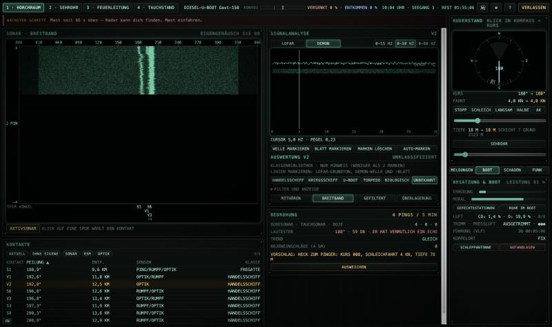
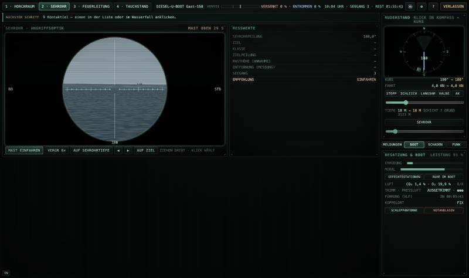
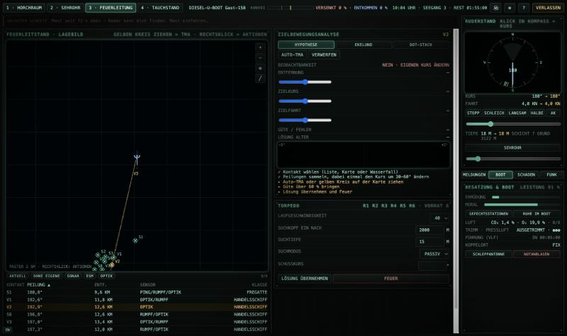
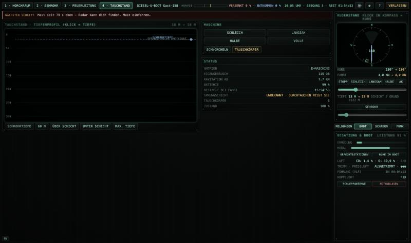
| Batterie | Diesel- und AIP-Boote fahren getaucht auf Batterie. Der Verbrauch steigt mit dem Quadrat der Fahrt. Schnorcheln auf Sehrohrtiefe lädt, ist aber laut und zeigt Mast und Abgas. Das AIP-Boot verbraucht bis 5 kn nichts. |
| Luft | CO₂ steigt, O₂ fällt. Ab 3 % CO₂ oder unter 18 % O₂ leistet die Besatzung weniger. Abhilfe: Schnorcheln, Auftauchen, CO₂-Absorber und Sauerstoffkerzen. |
| Trimm | Fahrt und Tiefenwechsel bringen das Boot aus dem Trimm. Ein schlecht getrimmtes Boot steuert Tiefe träge. |
| Pressluft | Drei Flaschen. „Notanblasen“ (zweimal tippen) bringt das Boot schnell nach oben, ist aber sehr laut und kostet eine Flasche. |
| Testtiefe | Unter der Tauchtiefe drohen Lecks und Schäden. |
| Tiefenalarme | Im Tauchstand unter „Alarme“ einstellbar und einzeln abschaltbar: Obergrenze (meldet, wenn das Boot ungewollt flacher steigt; schweigt bei befohlener Sehrohrtiefe), Untergrenze (Vorgabe 90 % der Testtiefe) und Grundabstand mit WARNUNG (50 m) und GEFAHR (25 m) Wasser unter dem Kiel. Ein Alarm ertönt einmal und erscheint auf jeder Station unter der Kopfleiste und in der Tiefenzeile des Ruderstands; erneut erst, wenn das Boot den Bereich um einige Meter verlassen hat. Die Werte gelten je Bootsklasse und bleiben gespeichert. |
| Koppelort | Getaucht wird die eigene Position nur gekoppelt und immer ungenauer (bis 8 sm). Ein Fix am Mast setzt sie zurück. |
| Besatzung | Gefechtsstationen geben +10 % Leistung, ermüden aber in etwa 90 Minuten. „Ruhe im Boot“ senkt den Lärm um 3 dB, halbiert aber Reparatur und Nachladen. |
Funken geht nur mit ausgefahrenem Mast auf Sehrohrtiefe, und jede Sendung erzeugt beim Gegner eine Funkpeilung. Die Flottenführung sendet etwa alle 20 Minuten für 3 Minuten. Empfangen kann man über VLF bis 25 m Tiefe oder mit der Schleppantenne bis 60 m bei höchstens 6 kn.
Kilo-, Küsten- und AIP-Boote haben vier Minen an Bord („Mine legen“ im Feuerleitstand, höchstens 8 kn, alle 30 s eine). Sie gehen nur in Wasser von 25 bis 300 m: bis 60 m auf den Grund, tiefer verankert in 10 m. Nach drei Minuten sind sie scharf und treffen jedes Schiff, auch eigene und neutrale. Am wirksamsten ist eine Sperre quer zur Route, 3 bis 6 km vor dem Konvoi, mit etwa 100 m Abstand – ein Frachter löst erst im Umkreis von rund 55 m aus. In der Kampagne bleiben gelegte Minen verbraucht, bis die Werft aufmunitioniert.
Der Konvoi zählt, nicht die Abschüsse. Zwischen U-Boot und Konvoi bleiben, Kontakte früh finden, Angriffe stören.
| Taste | Station | Aufgabe |
|---|---|---|
| 1 | Operationszentrale | Lagebild mit Konvoi, Eskorten, Datalink-Kontakten, Bojen, Hubschrauber und Funkpeilungen; Befehle an den Konvoi (Kurs, Zickzack, Fahrt). |
| 2 | Sonar | Rumpfsonar aktiv/passiv, Pulsart CW oder LFM, Schleppsonar mit Länge und Seitenwahl, BT-Sonde, VDS (nur F-30). |
| 3 | Waffen | U-Jagd-Rakete (bis 18 km, 40 s Flugzeit, setzt einen Leichttorpedo ab), Torpedorohre, Wasserbomben, Täuschkörper-Schleppe, Torpedowarnung. |
| 4 | Radar und ESM | Radar an/aus (verrät die eigene Position), kurze Echos von Masten und Schnorcheln, Peilung gegnerischer Funksprüche. |
| 5 | Brücke | Ausguck in 3D: Masten, Schnorchelfahnen, Torpedolaufbahnen, Treffer bei Tag; nachts nur beleuchtete Schiffe. |
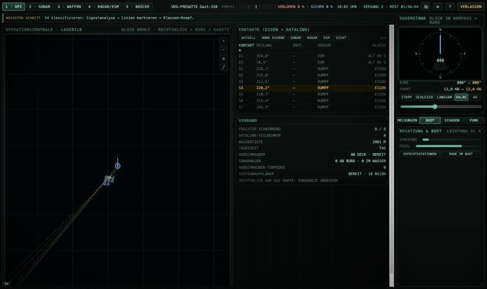
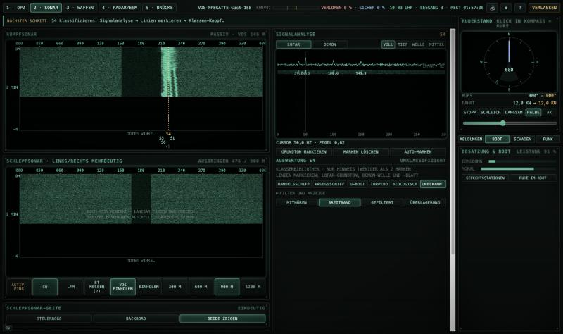
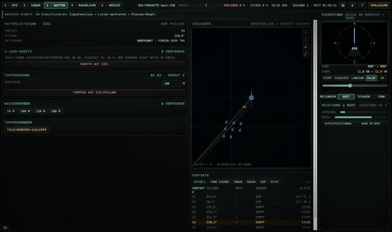
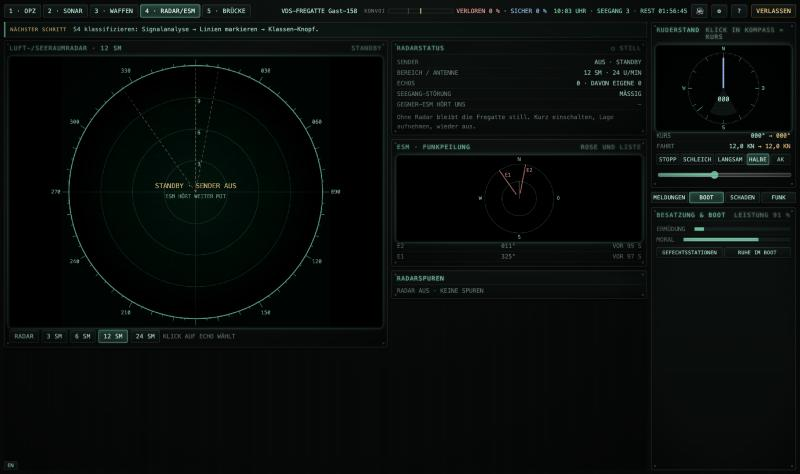
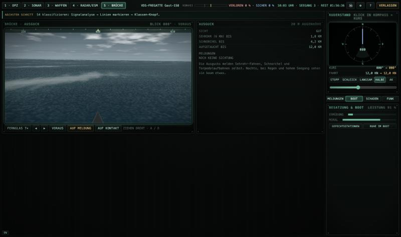
| Schleppsonar | Das beste passive Ohr. Lang ausgebracht hängt es unter der Schicht. Nur bis 14 kn brauchbar, nach jedem Kurswechsel 60 s Stabilisierung. Links/rechts-Mehrdeutigkeit: 20° wenden oder das Rumpfsonar entscheidet. |
| Aktivsonar | Liefert Entfernung, verrät aber das Schiff auf große Entfernung. CW misst den Doppler (kommt er näher?), LFM misst genau und findet auch langsame Ziele im Nachhall. |
| VDS (F-30) | Der Sonarkörper wird 40 m unter die gemessene Schicht gefiert. Dort hört und pingt er ohne den Schichtverlust. Bis 18 kn. |
| BT-Sonde | Misst die Sprungschicht. Ohne Messung kennt man ihre Tiefe nicht. |
| Radar | Sieht Masten und Schnorchel auf einige Kilometer und Flugzeuge weit darüber hinaus, verrät aber die Fregatte an jedes U-Boot mit ESM. Taucht der feindliche Fernaufklärer auf, kennen die U-Boote bald die Lage des Konvois – Kurs ändern lohnt sich. |
Der ESM-Empfänger peilt nicht nur, er erkennt den Sender an Band, Umlaufzeit und Pulsbild. Eine Meldung lautet etwa „ESM 252° · SEEFALKE-2 · FREGATTE? (OBERFLÄCHENSUCHE) · STARK, STEIGEND“: Sender, wahrscheinlicher Träger, Art des Radars, Signalstärke und ob sie zunimmt (der Sender kommt näher). Ein Fragezeichen heißt: Mehrere Klassen tragen dasselbe Gerät – die F-12 und die F-30 klingen gleich, alle Handelsschiffe auch. Das ist ein Hinweis, keine Identifizierung. Flugzeugradare und Feuerleitradare erscheinen rot; im Sehrohr steht dann „FLUGZEUGRADAR – TAUCHEN“. Ein Feuerleitradar strahlt nur, solange das Schiff einen Flugkörper lenkt. Auf der Karte trägt die ESM-Peillinie den Sendernamen.
| Sender | Band | Umlauf | Art | Wahrscheinlich | Möglich |
|---|---|---|---|---|---|
| SEEFALKE-2 | X | 2.5 s | Oberflächensuche | FREGATTE? | Fregatte F-12 / Fregatte F-30 (VDS) |
| KORMORAN-1 | X | 3 s | Oberflächensuche | KORVETTE | Korvette K-7 |
| TAIFUN-11 | S | 6 s | Luftsuche | WACHSCHIFF | Wachschiff Projekt 11 |
| ZIELSPINNE-4 | Ku | — | Feuerleitung | FREGATTE? | Fregatte F-12 / Fregatte F-30 (VDS) |
| BLITZAUGE-2 | Ku | — | Feuerleitung | KORVETTE | Korvette K-7 |
| SKORPION-F | C | — | Feuerleitung | WACHSCHIFF | Wachschiff Projekt 11 |
| LOTSE-9 | X | 2.4 s | Navigation | HANDELSSCHIFF? | Frachter / Supertanker / Containerschiff / RoRo-Fähre |
| MÖWE-M | X | 2 s | Navigation | KLEINFAHRZEUG? | Fischtrawler / Hochseeschlepper / Segelyacht |
| ALBATROS-7 | X | 4 s | Flugzeugradar | SEEAUFKLÄRER | Seeaufklärer |
| LIBELLE-5 | X | 3 s | Flugzeugradar | HUBSCHRAUBER | Bordhubschrauber |
| KIEBITZ-U | X | 3 s | Oberflächensuche | U-BOOT? | Diesel-U-Boot Projekt 4 / Atom-U-Boot Projekt 9 / Küsten-U-Boot Projekt 2 / U-Boot Projekt 6 (AIP) |
| SEESCHWALBE-U | X | 2.5 s | Oberflächensuche | U-BOOT | Jagd-U-Boot S-14 |
| NORDLICHT-3 | X | 5 s | Flugzeugradar | FERNAUFKLÄRER | Fernaufklärer |
Rechtsklick auf die Karte öffnet die Luftmittel. Der Hubschrauber fliegt mit 120 kn bis 30 km weit und braucht nach jeder Landung 2 Minuten an Deck.
| Sonarboje flach / tief | Passive Boje (DIFAR): peilt von ihrem Ort aus, 30 Minuten lang. „Tief“ hängt unter der Schicht. Bojen treiben mit der Strömung. |
| Aktive Boje (DICASS) | Pingt 15 Minuten lang alle 45 s und liefert Peilung und Entfernung bis etwa 6 km. Jedes U-Boot in der Nähe hört sie. |
| Tauchsonar | Der Hubschrauber schwebt 5 Minuten und pingt alle 20 s, flach oder unter der Schicht, bis 12 km. |
| Leichttorpedo | Abwurf auf eine Position; der Torpedo sucht im Kreis (45 kn, 8 km Lauf). |
| MAD | Kleeblattmuster in 50 m Höhe: Die Magnetsonde findet ein getauchtes Boot nur direkt darunter (wenige hundert Meter). |
| Seeaufklärer | Legt eine Bojenkette quer zu einer Peilung. Danach 30 Minuten Bereitschaft. |
Das aktive Rumpfsonar findet verankerte Minen voraus bis etwa 1 km (Grundminen 0,6 km). Das Minenmeidesonar (Sonarstation, „Minenmeiden“) reicht 1,6 km in ±70° voraus, auch ohne Aktivsonar und kaum weit zu hören – aber nur bis 15 kn. Sein Suchsektor steht im Lagebild. Gefundene Minen gehen über den Datalink an alle Geleitschiffe; der Konvoi weicht ihnen mit 400 m Abstand aus. Liegt eine ganze Sperre vor dem Konvoi, versetzt „Konvoi umleiten“ in der OPZ seinen Kurs um 1,5 oder 3 km zur Seite; „Route“ führt ihn zurück.
Neutrale Schiffe fahren immer mit Lichtern. Der Konvoi führt sie, um die Kolonnen zu halten, und verdunkelt, sobald eine Bedrohung gemeldet wird (Torpedowarnung, Verlust, Sichtung), für 30 ruhige Minuten. Eskorten löschen ihre Lichter zusätzlich, solange sie pingen oder auf Gefechtsstationen sind. Nachts sieht man beleuchtete Schiffe viel weiter.
Der Server schickt nur Messwerte. Was ein Kontakt ist, entscheidest du. Die Klassenbibliothek bewertet deine Marken, die Entscheidung triffst du mit den Klassen-Knöpfen.
| Schritt | Vorgehen |
|---|---|
| 1 · LOFAR | Kontakt wählen, auf eine senkrechte Linie klicken und „Grundton markieren“. Gestrichelte Linien bei 2f und 3f zeigen, ob die anderen Linien eine Familie bilden (Generator, Getriebe). |
| 2 · DEMON | Die tiefe Linie als „Welle“, die stärkere höhere als „Blatt“ markieren. Blatt ÷ Welle = Blattzahl, Welle × 60 = Drehzahl. Drehzahl ÷ Fahrt ergibt einen Wert, der zur Klasse passt. |
| 3 · Bibliothek | Sie vergleicht Blattzahl, Drehzahl je Knoten und Linien mit dem Katalog (siehe Einheitenreferenz). |
| Filter | Band wählen, Notch blendet die eigene Schraube aus, lange Integration hebt schwache Linien, „Spitze“ hält Maxima. |
Jede Klasse klingt anders: eigene Maschinenlinien (LOFAR), eigene Flügelzahl und Drehzahl der Schraube (DEMON). Die Werte kommen direkt aus der Simulation. Gemessene Linien streuen um etwa ±0,3 Hz, Welle und Blatt um wenige Hundertstel Hertz.
| Klasse | Flügel | U/min je kn | DEMON (Beispiel) | LOFAR-Linien (Hz) | Analyseband · so klingt es |
|---|---|---|---|---|---|
| Kriegsschiffe (Westbund) | |||||
| Fregatte F-12 (Gasturbine) | 5 | 7 | Welle 1,8 Hz · Blatt 8,8 Hz bei 15 kn | 60 / 120 / 180 / 233 | VOLL (0–300) Gleichmäßiges Rauschen, Turbinenpfeifen; 5 Flügel, mittlere Drehzahl. |
| Fregatte F-30 (Dampfturbine) | 3 | 8 | Welle 2,0 Hz · Blatt 6,0 Hz bei 15 kn | 60 / 190 / 285 | VOLL (0–300) Dampfturbine: weiches Rauschen, 3 große Flügel, Linien 190/285 Hz. |
| Korvette K-7 (Diesel, Gasturbine) | 4 | 9 | Welle 2,3 Hz · Blatt 9,0 Hz bei 15 kn | 75 / 150 / 225 | VOLL (0–300) Diesel-Schlag im 75-Hz-Raster, 4 Flügel, wendig und leise. |
| Wachschiff (Ostpakt, gemischter Platz) | |||||
| Wachschiff Projekt 11 (Gasturbine) | 4 | 9 | Welle 2,3 Hz · Blatt 9,0 Hz bei 15 kn | 50 / 100 / 300 | VOLL (0–300) Gasturbinen-Heulen bei 300 Hz, 50-Hz-Bordnetz, zwei Wellen mit je vier Flügeln. |
| U-Boote (Ostpakt) | |||||
| Atom-U-Boot Projekt 9 | 7 | 7,5 | Welle 0,8 Hz · Blatt 5,3 Hz bei 6 kn | 25 / 60 / 120 | MITTEL (20–120) Kaum Schraube, dafür Pumpen- und Turbinenton bei 25/60/120 Hz; viele Flügel. |
| Diesel-U-Boot Projekt 4 | 6/7 | 10 | Welle 0,7 Hz · Blatt 4,0 Hz bei 4 kn | 50 Schnorchel: 24 / 48 / 72 Hz | TIEF (4–80) Auf Batterie fast nur eine schwache 50-Hz-Linie; schnorchelnd laute Diesel bei 24/48/72 Hz. |
| Küsten-U-Boot Projekt 2 | 5 | 12 | Welle 0,8 Hz · Blatt 4,0 Hz bei 4 kn | 60 Schnorchel: 30 / 60 / 90 Hz | MITTEL (20–120) Klein und schnell drehend, 60-Hz-Linie; schnorchelnd 30/60/90 Hz. |
| U-Boot Projekt 6 (AIP) | 7 | 11 | Welle 0,7 Hz · Blatt 5,1 Hz bei 4 kn | 400 / 50 Schnorchel: 27 / 54 / 81 Hz | HOCH (200–500) Leise, aber der 400-Hz-Ton der Stromrichter verrät es; 7 Flügel. |
| Jagd-U-Boot (Westbund, gemischter Platz) | |||||
| Jagd-U-Boot S-14 | 7 | 6 | Welle 0,6 Hz · Blatt 4,2 Hz bei 6 kn | 60 / 42 / 120 | MITTEL (20–120) Fast unhörbar: 60-Hz-Bordnetz (West!) und Getriebe um 42 Hz, sieben Flügel, sehr langsame Welle. |
| Handel und Neutrale | |||||
| Frachter (Einwellen-Diesel) | 4/5 | 8,5 | Welle 1,7 Hz · Blatt 6,8 Hz bei 12 kn | 50 / 100 / 150 / 37,5 | VOLL (0–300) Dumpfes Stampfen, laute Linien 50/100/150 Hz, 4–5 Flügel. |
| Supertanker (Zweitakt-Diesel) | 5/4 | 5,5 | Welle 1,4 Hz · Blatt 6,9 Hz bei 15 kn | 9 / 50 / 100 | VOLL (0–300) Sehr langsames Stampfen, Diesel-Zündfolge um 9 Hz; Blattrate nur wenige Hertz. |
| Containerschiff (Zweitakt-Diesel) | 6/5 | 4,6 | Welle 1,1 Hz · Blatt 6,9 Hz bei 15 kn | 12 / 60 / 120 / 180 | VOLL (0–300) Schnell bei niedriger Drehzahl, 6 Flügel, Linien 12/60/120 Hz. |
| RoRo-Fähre (Mittelschnellläufer, zwei Wellen) | 4 | 8,5 | Welle 2,1 Hz · Blatt 8,5 Hz bei 15 kn | 33 / 50 / 67 / 250 | VOLL (0–300) Zwei Wellen, viele Linien zwischen 30 und 70 Hz. |
| Fischtrawler (Diesel) | 3/4 | 22 | Welle 2,9 Hz · Blatt 8,8 Hz bei 8 kn | 30 / 90 / 270 | VOLL (0–300) Hohe Drehzahl bei kleiner Fahrt, kräftige 30-Hz-Linie. |
| Schlepper (Diesel, Düsenpropeller) | 4 | 16 | Welle 2,7 Hz · Blatt 10,7 Hz bei 10 kn | 40 / 80 / 120 | MITTEL (20–120) Düsenpropeller, 40-Hz-Linie, hohe Drehzahl je Knoten. |
| Segelyacht (Hilfsdiesel) | 2/3 | 110 | Welle 11,0 Hz · Blatt 22,0 Hz bei 6 kn | 25 / 50 | WELLE (8–55) Sehr leise, 25-Hz-Linie, sehr hohe Drehzahl des Hilfsdiesels. |
| Waffen | |||||
| Schwergewichtstorpedo | 9/11 | 38 | Welle 25,3 Hz · Blatt 228,0 Hz bei 40 kn | — | WELLE (8–55) Hohes, sirrendes Heulen, schnell lauter werdend; 9–11 Flügel, sehr hohe Drehzahl. |
Alle Werte stammen direkt aus der Simulation. Die Bilder zeigen die Modelle, wie sie im Sehrohr und auf der Brücke erscheinen.
| Klasse | t | kn | Tiefe | Lärm* | Stärke |
|---|---|---|---|---|---|
| Fregatte F-12 | 4.100 | 29 | — | 150 dB | Hubschrauber, Bojen |
| Fregatte F-30 (VDS) | 2.900 | 28 | — | 146 dB | VDS unter der Schicht |
| Korvette K-7 | 1.000 | 30 | — | 142 dB | wendig, leise |
| Jagd-U-Boot S-14 | 4.800 | 30 | 400 m | 119 dB | jagt die Wölfe (gemischt) |
| Wachschiff Projekt 11 | 3.500 | 32 | — | 152 dB | Seeziel-FK, bindet die Eskorte (gemischt) |
| Atom-U-Boot Projekt 9 | 7.000 | 31 | 400 m | 125 dB | Tempo, Ausdauer |
| Diesel-U-Boot Projekt 4 | 3.000 | 19 | 300 m | 115 dB | sehr leise |
| Küsten-U-Boot Projekt 2 | 500 | 17 | 200 m | 108 dB | Flachwasser |
| U-Boot Projekt 6 (AIP) | 1.600 | 20 | 250 m | 111 dB | leise und ausdauernd |
* Quellpegel bei Marschfahrt (U-Boote 4–5 kn, Überwasserschiffe 15 kn). Je 6 dB weniger halbiert etwa die Entfernung, auf die man gehört wird.
| Seite | Westbund |
|---|---|
| Verdrängung | 4.100 t |
| Höchstfahrt | 29 kn |
| Wendekreis | 800 m |
| Tiefgang | 6 m |
| Antrieb | Gasturbine |
| Ausdauer | unbegrenzt |
| Sensoren | Rumpfsonar (Bündelung 15 dB, aktiv) · Schleppsonar 1.200 m (bis 14 kn) · Bordhubschrauber · Radar, Funkpeilung, Ausguck |
| Bewaffnung | 2 Rohre · 6 leichte Torpedos · 8 U-Jagd-Raketen · 12 Wasserbomben · 8 BT-Sonden |
| Signatur | 5-Blatt-Schraube · Linien 60 Hz, 120 Hz, 180 Hz, 233 Hz |
| Klasse im Sonar | Kriegsschiff |
Das Rückgrat der Sicherung: kräftiges Rumpfsonar, langes Schleppsonar und ein Hubschrauber mit Sonarbojen, Tauchsonar, Leichttorpedo und Magnetsonde (MAD). Laut bei hoher Fahrt (Gasturbine).
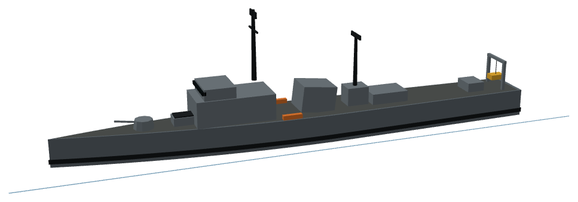
| Seite | Westbund |
|---|---|
| Verdrängung | 2.900 t |
| Höchstfahrt | 28 kn |
| Wendekreis | 840 m |
| Tiefgang | 6 m |
| Antrieb | Dampfturbine |
| Ausdauer | unbegrenzt |
| Sensoren | Rumpfsonar (Bündelung 16 dB, aktiv) · Schleppsonar 1.200 m (bis 14 kn) · Tiefensonar bis 250 m (bis 18 kn) · Radar, Funkpeilung, Ausguck |
| Bewaffnung | 2 Rohre · 8 leichte Torpedos · 8 U-Jagd-Raketen · 8 Wasserbomben · 8 BT-Sonden |
| Signatur | 3-Blatt-Schraube · Linien 60 Hz, 190 Hz, 285 Hz |
| Klasse im Sonar | Kriegsschiff |
Dampfturbinen-Fregatte älterer Bauart mit einem Sonarkörper, der an einem Kabel unter die Sprungschicht gefiert wird. Damit hört und pingt sie dort, wo sich U-Boote verstecken. Kein Hubschrauber.
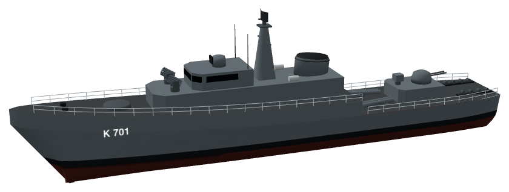
| Seite | Westbund |
|---|---|
| Verdrängung | 1.000 t |
| Höchstfahrt | 30 kn |
| Wendekreis | 600 m |
| Tiefgang | 4 m |
| Antrieb | Diesel, Gasturbine |
| Ausdauer | unbegrenzt |
| Sensoren | Rumpfsonar (Bündelung 14 dB, aktiv) · Schleppsonar 600 m (bis 14 kn) · Radar, Funkpeilung, Ausguck |
| Bewaffnung | 2 Rohre · 4 leichte Torpedos · 4 U-Jagd-Raketen · 16 Wasserbomben · 6 BT-Sonden |
| Signatur | 4-Blatt-Schraube · Linien 75 Hz, 150 Hz, 225 Hz |
| Klasse im Sonar | Kriegsschiff |
Klein, wendig und leise, aber mit kurzem Schleppsonar, schwächerem Rumpfsonar und ohne Hubschrauber. Ideal als Flankensicherung und für die schnelle Verfolgung eines Kontakts.
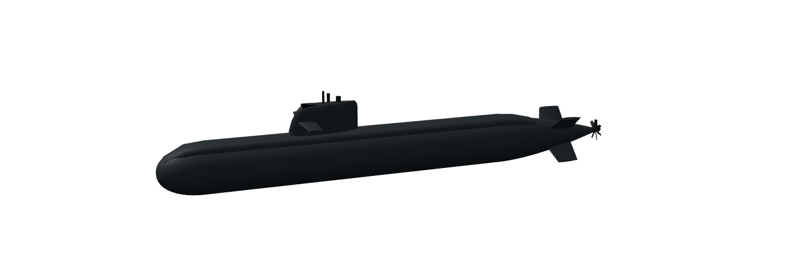
| Seite | Westbund |
|---|---|
| Verdrängung | 4.800 t |
| Höchstfahrt | 30 kn |
| Wendekreis | 840 m |
| Tauchtiefe | 400 m |
| Kavitation ab | 10 kn an der Oberfläche, +5 kn je 100 m Tiefe |
| Ausdauer | unbegrenzt |
| Sensoren | Rumpfsonar (Bündelung 17 dB, aktiv) · Schleppsonar 800 m (bis 12 kn) · Sehrohr, Funkpeilung (ESM) |
| Bewaffnung | 4 Rohre · 14 schwere Torpedos · 8 Täuschkörper |
| Signatur | 7-Blatt-Schraube · Linien 60 Hz, 42 Hz, 120 Hz |
| Klasse im Sonar | U-Boot |
Atom-U-Boot in direkter Unterstützung des Konvois: sehr leise, schnell und tief, mit langem Schleppsonar. Es jagt die Wölfe vor dem Konvoi, bevor sie schießen. Höchstens eines pro Team. Um das Boot liegt ein mitwanderndes Sperrgebiet von 4 km: Dort setzen die eigenen Fregatten keine U-Jagd-Waffe ein.
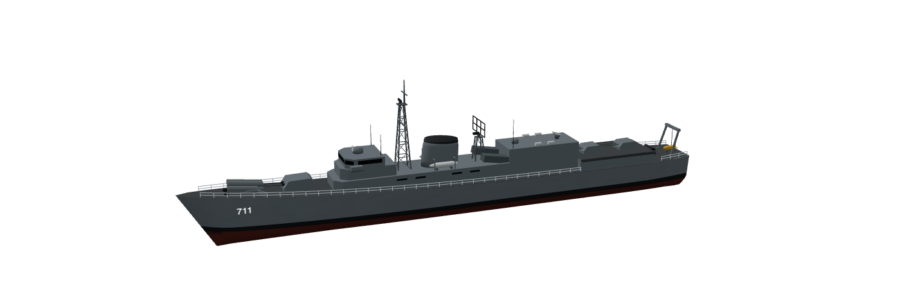
| Seite | Ostpakt |
|---|---|
| Verdrängung | 3.500 t |
| Höchstfahrt | 32 kn |
| Wendekreis | 860 m |
| Tiefgang | 5 m |
| Antrieb | Gasturbine |
| Ausdauer | unbegrenzt |
| Sensoren | Rumpfsonar (Bündelung 15 dB, aktiv) · Tiefensonar bis 150 m (bis 18 kn) · Radar, Funkpeilung, Ausguck |
| Bewaffnung | 2 Rohre · 8 leichte Torpedos · 8 U-Jagd-Raketen · 12 Wasserbomben · 6 BT-Sonden |
| Signatur | 4-Blatt-Schraube · Linien 50 Hz, 100 Hz, 300 Hz |
| Klasse im Sonar | Kriegsschiff |
Schnelles U-Jagd-Schiff mit Tiefensonar und Raketen, ohne Hubschrauber, laut (Gasturbinen). Es läuft dem Rudel voraus, bindet die Eskorte und jagt deren U-Boot. Dazu trägt es acht Seezielflugkörper (6–40 km): Sie fliegen dicht über dem Wasser, der Suchkopf öffnet 9 km vor dem Zielpunkt und nimmt das größte Echo im Kegel, auch ein neutrales Schiff. Eskorten mit Radar wehren mit Flugabwehrraketen ab, aus der Nähe mit den Geschützen. Höchstens eines pro Team; um die eigenen Boote gilt das Sperrgebiet.
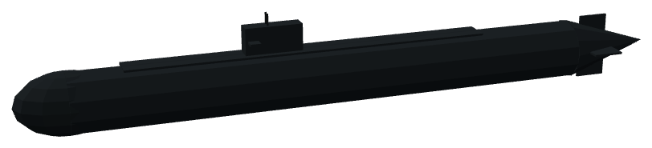
| Seite | Ostpakt |
|---|---|
| Verdrängung | 7.000 t |
| Höchstfahrt | 31 kn |
| Wendekreis | 900 m |
| Tauchtiefe | 400 m |
| Kavitation ab | 9 kn an der Oberfläche, +5 kn je 100 m Tiefe |
| Ausdauer | unbegrenzt |
| Sensoren | Rumpfsonar (Bündelung 16 dB, aktiv) · Schleppsonar 600 m (bis 12 kn) · Sehrohr, Funkpeilung (ESM) |
| Bewaffnung | 4 Rohre · 16 schwere Torpedos · 8 Täuschkörper |
| Signatur | 7-Blatt-Schraube · Linien 25 Hz, 60 Hz, 120 Hz |
| Klasse im Sonar | U-Boot |
Schnell und unbegrenzt ausdauernd, mit Schleppsonar und 16 schweren Torpedos. Bei hoher Fahrt und geringer Tiefe laut (Kavitation, Reaktorpumpen).
| Seite | Ostpakt |
|---|---|
| Verdrängung | 3.000 t |
| Höchstfahrt | 19 kn |
| Wendekreis | 600 m |
| Tauchtiefe | 300 m |
| Kavitation ab | 7 kn an der Oberfläche, +4 kn je 100 m Tiefe |
| Batterie | 80 kn·h |
| Sensoren | Rumpfsonar (Bündelung 15 dB, aktiv) · Sehrohr, Funkpeilung (ESM) |
| Bewaffnung | 6 Rohre · 10 schwere Torpedos · 6 Täuschkörper |
| Signatur | 6-Blatt-Schraube · Linien 50 Hz · Schnorchel 24/48/72 Hz |
| Klasse im Sonar | U-Boot |
Auf Batterie das leiseste Boot im Spiel, aber mit begrenzter Ausdauer: Schnorcheln lädt, verrät das Boot aber durch Dieselgeräusch, Mast und Radar.
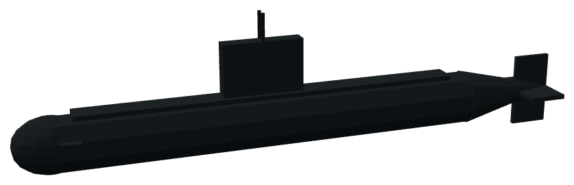
| Seite | Ostpakt |
|---|---|
| Verdrängung | 500 t |
| Höchstfahrt | 17 kn |
| Wendekreis | 400 m |
| Tauchtiefe | 200 m |
| Kavitation ab | 6 kn an der Oberfläche, +4 kn je 100 m Tiefe |
| Batterie | 45 kn·h |
| Sensoren | Rumpfsonar (Bündelung 12 dB, aktiv) · Sehrohr, Funkpeilung (ESM) |
| Bewaffnung | 8 Rohre · 8 schwere Torpedos · 4 Täuschkörper |
| Signatur | 5-Blatt-Schraube · Linien 60 Hz · Schnorchel 30/60/90 Hz |
| Klasse im Sonar | U-Boot |
Sehr klein, extrem leise und wendig, nur 200 m Tauchtiefe. Acht Bugrohre, aber keine Reservetorpedos: Was verschossen ist, ist weg. Ideal für flaches Wasser, Fjorde und Meerengen.
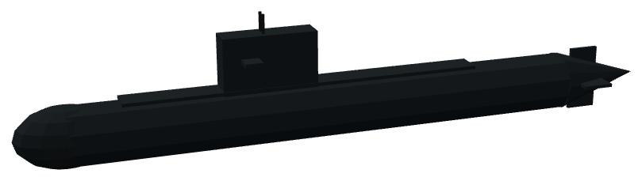
| Seite | Ostpakt |
|---|---|
| Verdrängung | 1.600 t |
| Höchstfahrt | 20 kn |
| Wendekreis | 520 m |
| Tauchtiefe | 250 m |
| Kavitation ab | 7 kn an der Oberfläche, +4 kn je 100 m Tiefe |
| Batterie | 60 kn·h · AIP bis 5 kn |
| Sensoren | Rumpfsonar (Bündelung 15 dB, aktiv) · Sehrohr, Funkpeilung (ESM) |
| Bewaffnung | 4 Rohre · 8 schwere Torpedos · 6 Täuschkörper |
| Signatur | 7-Blatt-Schraube · Linien 400 Hz, 50 Hz · Schnorchel 27/54/81 Hz |
| Klasse im Sonar | U-Boot |
Fast so leise wie das Diesel-U-Boot, aber bis 5 kn ohne Batterieverbrauch. Muss nur zum schnellen Laufen schnorcheln. Ein schwacher 400-Hz-Ton der Stromrichter kann es verraten.
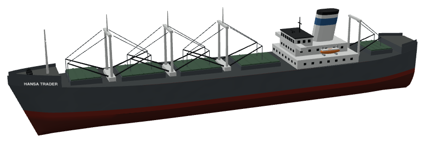
| Seite | Konvoi |
|---|---|
| Verdrängung | 12.000 t |
| Höchstfahrt | 14 kn |
| Wendekreis | 700 m |
| Tiefgang | 9 m |
| Antrieb | Einwellen-Diesel |
| Ausdauer | unbegrenzt |
| Sensoren | — |
| Bewaffnung | — |
| Signatur | 4-Blatt-Schraube · Linien 50 Hz, 100 Hz, 150 Hz, 37.5 Hz |
| Klasse im Sonar | Handelsschiff |
Das Ziel der Partie. Laut und langsam, mit starken Linien bei 50/100/150 Hz. Fährt im Zickzack und weicht bei Angriffen aus. Nachts mit Positionslichtern, bis eine Bedrohung gemeldet wird.
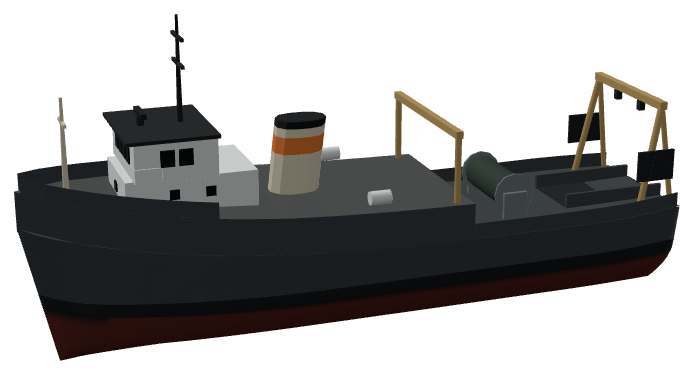
| Seite | Neutral |
|---|---|
| Verdrängung | 900 t |
| Höchstfahrt | 11 kn |
| Wendekreis | 300 m |
| Tiefgang | 4 m |
| Antrieb | Diesel |
| Ausdauer | unbegrenzt |
| Sensoren | Radar, Funkpeilung, Ausguck |
| Bewaffnung | — |
| Signatur | 3-Blatt-Schraube · Linien 30 Hz, 90 Hz, 270 Hz |
| Klasse im Sonar | Handelsschiff |
Schleppt mit 4–6 kn ein Netz und wechselt alle Viertelstunde den Kurs. Laut für seine Größe, viele Lichter. Im Schelf oft zu mehreren.
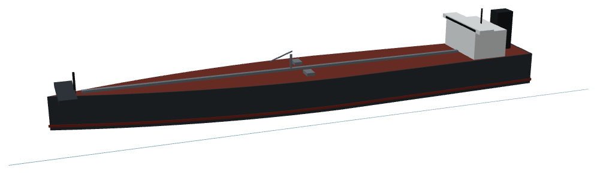
| Seite | Neutral |
|---|---|
| Verdrängung | 280.000 t |
| Höchstfahrt | 15 kn |
| Wendekreis | 2.800 m |
| Tiefgang | 20 m |
| Antrieb | Zweitakt-Diesel |
| Ausdauer | unbegrenzt |
| Sensoren | Radar, Funkpeilung, Ausguck |
| Bewaffnung | — |
| Signatur | 5-Blatt-Schraube · Linien 9 Hz, 50 Hz, 100 Hz |
| Klasse im Sonar | Handelsschiff |
Riesig, tiefgehend und träge: Wendekreis fast drei Kilometer, Brücke und Schornstein ganz achtern. Ein langsam drehender Zweitakt-Diesel treibt eine große Schraube – der lauteste Kontakt im Gebiet, sehr tiefe Linien.
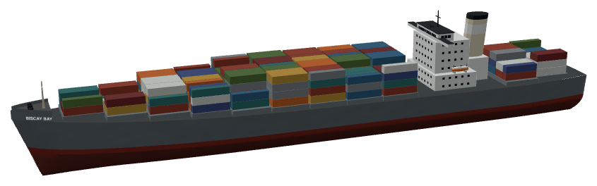
| Seite | Neutral |
|---|---|
| Verdrängung | 40.000 t |
| Höchstfahrt | 23 kn |
| Wendekreis | 1.600 m |
| Tiefgang | 11 m |
| Antrieb | Zweitakt-Diesel |
| Ausdauer | unbegrenzt |
| Sensoren | Radar, Funkpeilung, Ausguck |
| Bewaffnung | — |
| Signatur | 6-Blatt-Schraube · Linien 12 Hz, 60 Hz, 120 Hz, 180 Hz |
| Klasse im Sonar | Handelsschiff |
Schnell (um 20 kn) und laut, Brücke drei Viertel achtern, bunte Containerstapel. Fährt geradeaus auf einer Handelsroute und hält nicht an.
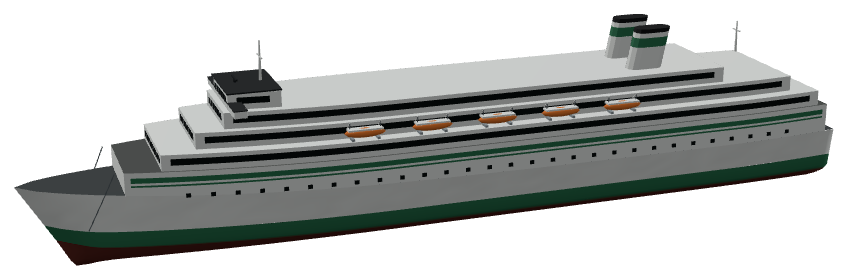
| Seite | Neutral |
|---|---|
| Verdrängung | 14.000 t |
| Höchstfahrt | 21 kn |
| Wendekreis | 900 m |
| Tiefgang | 6 m |
| Antrieb | Mittelschnellläufer, zwei Wellen |
| Ausdauer | unbegrenzt |
| Sensoren | Radar, Funkpeilung, Ausguck |
| Bewaffnung | — |
| Signatur | 4-Blatt-Schraube · Linien 33 Hz, 50 Hz, 67 Hz, 250 Hz |
| Klasse im Sonar | Handelsschiff |
Weiß, hoch, mit zwei Schornsteinen und zwei Wellen. Pendelt zügig auf festen Linien zwischen Häfen, vor allem im Schelf und in Fjorden.
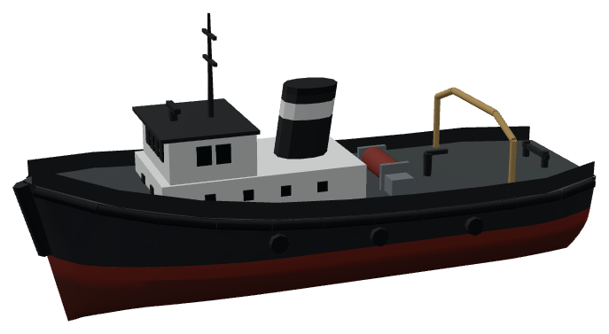
| Seite | Neutral |
|---|---|
| Verdrängung | 1.600 t |
| Höchstfahrt | 15 kn |
| Wendekreis | 240 m |
| Tiefgang | 5 m |
| Antrieb | Diesel, Düsenpropeller |
| Ausdauer | unbegrenzt |
| Sensoren | Radar, Funkpeilung, Ausguck |
| Bewaffnung | — |
| Signatur | 4-Blatt-Schraube · Linien 40 Hz, 80 Hz, 120 Hz |
| Klasse im Sonar | Handelsschiff |
Klein und kräftig, Brücke vorn, Schleppbogen achtern. Sehr laut für seine Größe, hohe Wellendrehzahl.
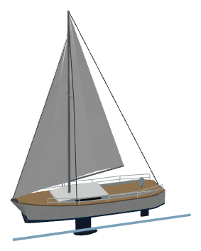
| Seite | Neutral |
|---|---|
| Verdrängung | 25 t |
| Höchstfahrt | 8 kn |
| Wendekreis | 60 m |
| Tiefgang | 2 m |
| Antrieb | Hilfsdiesel |
| Ausdauer | unbegrenzt |
| Sensoren | Radar, Funkpeilung, Ausguck |
| Bewaffnung | — |
| Signatur | 2-Blatt-Schraube · Linien 25 Hz, 50 Hz |
| Klasse im Sonar | Handelsschiff |
Unter Segeln fast lautlos; nur der kleine Hilfsdiesel ist schwach zu hören. Im Sehrohr gut an den Segeln zu erkennen.
Über dem Einsatzgebiet ist Betrieb: eigene Hubschrauber und Seeaufklärer, der Fernaufklärer des Ostpakts und ziviler Luftverkehr. Auf Karte und Radar tragen Flugzeuge das Luftsymbol (obere Hälfte des Rahmens) mit Höhe.
| Typ | Seite | Höhe | kn | Rolle und Erkennung | |
|---|---|---|---|---|---|
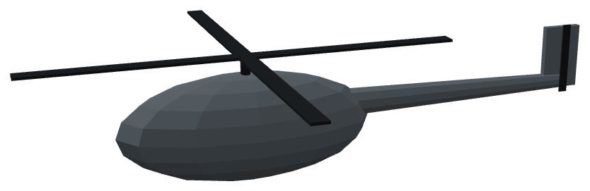 | Bordhubschrauber | Westbund (F-12) | 25–120 m | 120 | Wirft Sonarbojen und Leichttorpedos, taucht sein Sonar, fliegt das MAD-Kleeblatt. Ohne eigenes Radar; dem U-Boot verrät er sich durch Rotorlärm und im Sehrohr. |
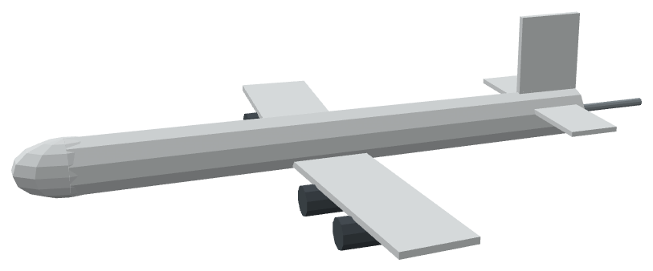 | Seeaufklärer | Westbund (auf Anforderung) | 300 m (MAD 60 m) | 300 | Vier Turboprops, Magnetsonde im Heck. Legt Bojenketten; sein Suchradar ist eingeschaltet und für jedes U-Boot mit ausgefahrenem Mast auf große Entfernung im ESM zu hören. |
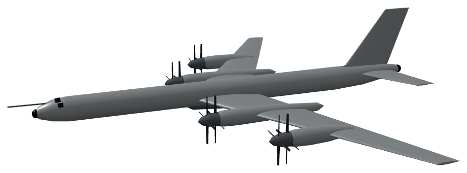 | Fernaufklärer | Ostpakt | 1500 m, über dem Konvoi 300 m | 330 | Kommt etwa alle 40–60 Minuten, sucht mit eingeschaltetem Radar, kreist fünf Minuten tief über dem Konvoi und meldet Position, Kurs und Fahrt über die Führung an die U-Boote. Die Eskorte sieht ihn im Radar und hört sein Radar im ESM – abschießen kann sie ihn nicht. |
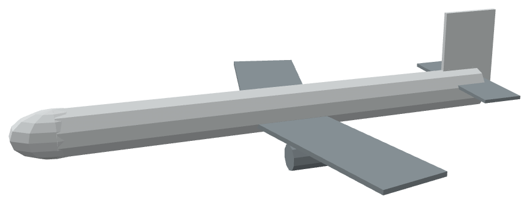 | Verkehrsflugzeug | Neutral | 9–11,5 km | 440–480 | Kreuzt auf Luftstraßen. Bei Tag am Kondensstreifen bis 45 km zu sehen, nachts an den Lichtern; im Luftraumradar weit über den Horizont hinaus. |
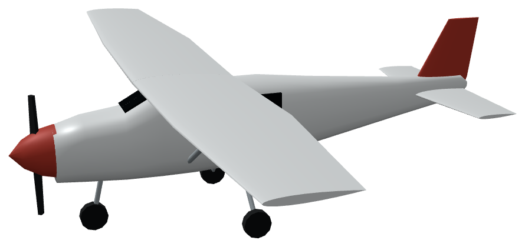 | Kleinflugzeug | Neutral | 500–1100 m | 110 | Hochdecker im Küstenverkehr, vor allem über Schelf und Fjord. Klein und nur auf wenige Kilometer zu sehen. |
| Sensor | Was er von Flugzeugen liefert |
|---|---|
| Luft-/Seeraumradar | Position, Höhe, Kurs und Fahrt bis zum Radarhorizont, der mit der Flughöhe wächst (Verkehrsflugzeuge weit über 100 km). Bereich 48 SM im Radarraum. |
| Ausguck / Sehrohr | Bei Tag nach Größe (Verkehrsflugzeug am Kondensstreifen), nachts nur an den Lichtern. Auf der Brücke schwenkt „Luft“ auf jedes sichtbare Flugzeug und folgt ihm mit dem Höhenwinkel. |
| ESM | Nur Peilung, aber auf die doppelte Radarreichweite: Seeaufklärer und Fernaufklärer verraten sich durch ihr Radar. Für ein U-Boot heißt das: Mast einfahren. |
| Datalink | Eigene Flugzeuge immer (U-Boote nur mit ausgefahrenem Mast). |
Wale, Delfine und Knallkrebse erscheinen im Sonar als Kontakte ohne Schraube. Sie zu erkennen spart Torpedos und Nerven – ein Pottwal in 400 m Tiefe sieht im Wasserfall aus wie ein tief fahrendes U-Boot.
| Quelle | Lebensraum | Lautstärke* | Erkennen |
|---|---|---|---|
| Finnwal | tiefes Wasser, Schelf | 168 dB | Abwärts gleitende Pulse um 20 Hz in langen Folgen; keine Schraube. |
| Blauwal | tiefes Wasser | 172 dB | Sehr tiefe, lange Rufe um 17 Hz mit Oberton bei 35 Hz. |
| Buckelwal (Gesang) | Schelf, tiefes Wasser | 160 dB | Gesang mit wechselnden Tönen zwischen 100 und 300 Hz. |
| Pottwal (Klicks) | über tiefem Wasser, taucht 400 m und tiefer | 170 dB | Laute Klicks; im DEMON eine langsame „Drehzahl“ um 1 Hz, keine Linien. Tiefer Kontakt – nicht mit einem U-Boot verwechseln. |
| Schwertwale (Orcas) | überall, nahe der Oberfläche | 150 dB | Pfiffe und Rufe am oberen Rand des LOFAR, schnelle Klickfolgen im DEMON. |
| Delfinschule | überall, Oberfläche | 145 dB | Schwache hohe Pfiffe, sehr schnelle Klickfolgen; wandert schnell. |
| Knallkrebse (Garnelenbank) | flacher Grund (unter 120 m) | 150 dB | Breitbandiges Knistern ohne Linien und ohne Bewegung: ein ortsfester „Kontakt“ am Grund. |
* Quellpegel im Spiel. Reale Werte (Wikipedia): Finnwal 155–186 dB, Blauwal bis 188 dB, Pottwal-Klicks bis 236 dB (vor allem im Kilohertzbereich), Knallkrebse 185–190 dB je Knall.
| Mission | Lage | Hinweis |
|---|---|---|
| Grönland-Lücke | Tiefes Wasser, Konvergenzzonen, ausgeprägte Sprungschicht. Quer zur Route liegt eine flache Bank (150–250 m) im Wartegebiet der U-Boote. | Schicht nutzen; Schleppsonare hören sehr weit. Minen gehen nur auf der Bank. |
| Schelfmeer | Flach (110–270 m), schwache Schicht, viel Nachhall, wenig Tauchtiefe. | Eskorte: LFM-Puls und aktive Bojen. U-Boot: nah am Grund und im Lärm der Frachter. |
| Fjordausfahrt | Enger Kanal zwischen Untiefen; wer ihn verlässt, läuft auf. | Der Konvoi ist berechenbar – die U-Boote auch: Die Rinne zwingt beide auf wenige Wege. |
| Hafenangriff | Frachter ankern in einer Bucht, die Eskorte bewacht die Einfahrt. | Langsam an der Einfahrt horchen; Schüsse auf ankernde Ziele brauchen keine TMA. |
| U-Boot-Duell | U-Boote gegen U-Boote, kein Konvoi. | Wer zuerst hört, gewinnt: sehr langsam, Schleppsonar, aktive Torpedos. |
| Fühlung halten | Waffen gesperrt: 25 Minuten Kontakt zum Konvoi aus höchstens 12 km. | Die Eskorte muss das Boot abdrängen, nicht versenken. |
| Meerengen-Durchbruch | Die U-Boote müssen durch eine bewachte Enge (Gibraltar: nach Osten ins Mittelmeer). | Tief und langsam durch das tiefste Wasser; die Eskorte legt Bojensperren. |
| Aufklärung | Ein Geleitschiff im Sehrohr erkennen und per Funk melden. | Ein kurzer Blick auf unter 4 km, dann senden – und sofort weg. |
| Eigene Mission | Konvoigröße, Fahrt, Meeresboden und Abstand frei wählbar. | Zum Üben einzelner Lagen. |
| Tageszeit | Tag, Dämmerung oder Nacht; die Uhr läuft mit. Nachts sieht man nur beleuchtete Schiffe und Mündungsfeuer weit. |
| Seegang | Mehr Seegang heißt mehr Störpegel, mehr Seegangsechos im Radar und schwerere Sicht im Sehrohr. |
| Sprungschicht | Tiefe und Stärke der Schicht; im Flachwasser schwächer. |
| KI-Stärke | Bestimmt, wie schnell und genau KI-Kommandanten lösen, schießen und melden. Jeder KI-Kommandant hat einen Charakter (draufgängerisch, schlauer Fuchs, vorsichtig, verbissener Jäger); die Aufklärung im Briefing deutet ihn manchmal an. |
In jeder Mission fahren neutrale Schiffe durch das Gebiet: im offenen Ozean vor allem Tanker und Containerschiffe, im Schelf Fischer, Fähren und Schlepper, in Fjorden auch Yachten. Sie halten ihren eigenen Kurs, meiden Untiefen, fahren immer mit Lichtern und werden ersetzt, wenn sie das Gebiet verlassen. Sie sind laut, verdecken leisere Kontakte in derselben Peilung und sind nie ein Ziel. Typen und Erkennungsmerkmale stehen in der Einheitenreferenz.
Alle 15 bis 30 Minuten passiert etwas, für beide Seiten gleich:
| Zwischenfall | Wirkung |
|---|---|
| Treibnetz | Reißt Schleppsonare ab (Ersatz nach 15 Minuten) und verfängt flach fahrende Boote für 20 Sekunden – laut. |
| Wetterfront | Angekündigt 20 Minuten vorher: Seegang steigt um zwei Stufen, Regen. |
| Weiteres Schiff | Ein zusätzliches neutrales Schiff kreuzt das Gebiet. |
| Meeresleben | Wale, Delfine oder eine Knallkrebsbank – je nach Wassertiefe. Siehe Biologische Kontakte. |
| Ruderversager | Das Ruder klemmt eine Minute. |
| Schnorchelventil | Klemmt: Der Schnorchel bleibt 45 Sekunden oben. |
| Batteriegas | Fünf Minuten weiter schnorcheln und lüften, sonst verpufft das Gas und beschädigt den Antrieb. |
Eine Meeresströmung versetzt alle Bojen. Eine Boje, die vor 20 Minuten gesetzt wurde, liegt nicht mehr dort, wo sie abgeworfen wurde – die Karte zeigt ihre aktuelle Position.
Treffer beschädigen Antrieb, Sonar, Waffen und verursachen Wassereinbruch. Im Reiter „Schaden“ legt ein Klick die Reparatur-Priorität fest. Verwundete senken die Leistung, Sanitäter versorgen sie.
Die Maus ist das Hauptwerkzeug; die Tasten sind Abkürzungen und lassen sich in der Hilfe (H) frei belegen.
| 1 … 5 | Stationen |
| ← → | Kurs 5° (mit ⇧ 1°) |
| ↑ ↓ | Fahrt ± 1 kn |
| Bild ↑ / Bild ↓ | Tiefe ∓ 10 m |
| A / D | Sehrohr drehen |
| V (halten) | Sprechfunk senden |
| H | Hilfe |
| M | Ton an/aus |
| Esc | Menüs und Fenster schließen |
| AIP | Außenluftunabhängiger Antrieb: lässt ein konventionelles U-Boot langsam ohne Batterieverbrauch fahren. |
| BT | Bathythermograph: Sonde, die das Temperaturprofil und damit die Sprungschicht misst. |
| CW / LFM | Pulsarten des Aktivsonars: Dauerton (misst Doppler) und frequenzmodulierter Puls (genau, gut im Nachhall). |
| DEMON | Analyse der Modulation des Schraubengeräuschs: ergibt Wellen- und Blattfrequenz. |
| DICASS | Aktive Sonarboje, die selbst pingt. |
| DIFAR | Passive Richtungsboje: liefert Peilungen von ihrem Ort aus. |
| ESM | Funk- und Radarpeilung: hört gegnerische Sender. |
| Kavitation | Dampfblasen an der Schraube bei hoher Fahrt: plötzlich sehr laut; setzt in der Tiefe später ein. |
| Knuckle | Wirbelfeld nach einer harten Wende bei Fahrt: schluckt Schall und lenkt Suchköpfe kurz ab. |
| Konvergenzzone | Bereich in etwa 55 km Entfernung, in dem Schall in tiefem Wasser wieder an die Oberfläche kommt. |
| LOFAR | Schmalband-Spektrum: zeigt Linien von Maschinen, Generatoren und Getrieben. |
| MAD | Magnetanomalie-Detektor: findet ein getauchtes Boot nur direkt darunter. |
| Schenkel | Ein gerades Stück eigener Kurs während der TMA. |
| SE | Signalüberschuss: über 0 dB ist ein Kontakt da. |
| Sprechtaste | Taste zum Senden im Sprechfunk; nur solange sie gedrückt ist, geht die Stimme hinaus. |
| TMA | Zielbewegungsanalyse: Kurs, Fahrt und Entfernung aus einer Folge von Peilungen. |
| Toter Winkel | Sektor achtern, in dem das Rumpfsonar die eigene Schraube hört. |
| VDS | Tiefensonar an einem Kabel: hört unter der Sprungschicht. |
| VLF | Längstwellenfunk der Führung, bis etwa 25 m Tiefe zu empfangen. |